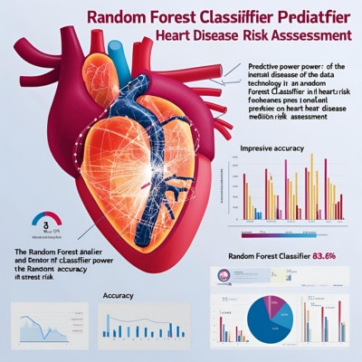

Hightlight Penelitian


Model Akurat: Random Forest Classifier mencapai akurasi 83.6% dalam memprediksi risiko penyakit jantung.
✅

Fitur Penting: Oldpeak, Thalach, dan Chest Pain Type menjadi faktor utama dalam prediksi.
✅

Menggunakan confusion matrix dan classification report untuk mengevaluasi model, menunjukkan precision, recall, dan F1-score yang seimbang di angka sekitar 0.84.
✅

Mengolah data dan melatih model menggunakan Python (Scikit-Learn, Pandas, Matplotlib, Seaborn) di Google Colab untuk efisiensi proses pengembangan dan analisis data.
✅